强化学习 – David Silver Course
Table of Contents
- 1. Lession 1
- 2. Lession 2
- 3. Lession 3
- 4. Lession 4免模型预测 Model-Free prediction
- 5. Lession 5 Model-Free Control
- 6. Lession 6
- 7. Lession 7
- 8. Lession 8
- 9. Ref
1 Lession 1
1.1 强化学习和其他机器学习之间的区别是什么？
- 没有监督者，只有反馈信号 reward signal
- 反馈会有延迟，不是立刻就能得到反馈
- 每个样本非独立同分布 每次获取的信息都不是独立同分布的
- action 对之后的结果会有影响
1.2 Reward
- Reward 代表一个反馈的信号，一般用来表示某一时刻的 action 的表现如何
1.3 Goal
- 对于任何的任务，我们的统一目标是：得到 reward 的累积最大值
- 基于上诉的要求，agent 需要计算未来的 reward，而不只是计算当前时间的 reward
- 有时，会为了未来的 reward 最大化 放弃当前的利益
1.4 Agent & Environment

1.5 History
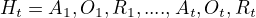
H: History A: Action O: Observation R: Reward(from environment)
推动事件发生的动力取决于History。
- 构建一个History到 Action的映射，Agent根据这个映射选择Action
- Environment返回Agent Observation 和 Rewards
1.6 State
- State 是对 History 的一个总结，用来决定下一个Action 是什么
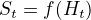
- Environment State(
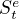
)，对于agent来说，可能不是可见的，也可能会包含过多无用的信息。 - Agent State(
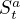
)，是把 经过agent抽象、整理之后的State，是RL用来分析的State。 - State 相对于 Agent 来说最大的好处是他的信息量很少，我们不需要得到所有的 History 来得到下一步的 Action
1.6.1 Markov
如果一个State满足：
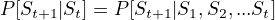
那么这个状态就是Markov 简单来说，P的下一个阶段的state（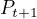
）只和当前state（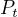
）有关，与之前的状态无关，那就称这个state为Markov1.7 RL Agent的主要元素
- Policy 决策，agent的行为函数（agent采取什么action取决于这个函数） 输入状态，输出动作或者各个动作的概率
- Value function 评价函数，用来判断当前状态或者行为的好坏
- Model agent对当前环境的表述
1.7.1 Policy
- Deterministic policy：每个状态都有一个对应的确定的决策，从state到 action 的映射 mapping
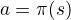
- Stochastic policy：输入状态，输出某种决策的概率
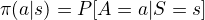
1.7.2 Value Function
- 对未来return的预测函数
- 评价state的好坏
- 当前状态为 S，假设你有两个选择 A1 和 A2，对应的状态为 S1 和 S2；选择的时候比较 S1 和 S2 状态的累积 reward 的大小
- 评价函数会计算未来一段时间的累积reward值的大小，而不只是当下。但是也不能考虑太远的未来，因为未来是无限长的，而且也没有必要去计算那么长的未来，所有会添加discount因子，即下述的

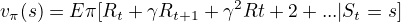
1.8 RL Agent的分类
1.8.1 分类1
- Value based 根据 Value function 计算，其中 Policy 是隐含的，不需要直接定义
- Policy based 根据 Policy 计算 Value Function 同时不断更新 Policy
- Actor Critic(Both)
1.8.2 分类2
- Model Free
- Policy and/or Value Function
- No Model
- Model Based
2 Lession 2
2.1 Markov Process 马尔科夫过程
在一个时序过程中，如果 t+1 时刻的状态仅取决于 t 时刻的状态
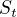
而与 t 时刻之前的任何状态都无关时，则认为 t 时刻的状态 具有马尔科夫性。若这个过程中的每个状态都具有马尔科夫性，那么这个过程具备马尔科夫性。具备了马尔科夫性的随机过程称为马尔科夫过程，又称马尔科夫链。
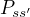
表示State从 s 转移到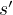
的概率。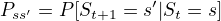
马尔科夫过程只涉及到状态之间转移的概率，没有考虑强化学习过程中伴随的奖励反馈。
2.2 Markov Reward Process
Markov Reward Process 可以用元祖表示 (S, P, R, )
- S 有限的State集合
- P 状态转移矩阵（状态之间转移的概率）
- R Reward Function 奖励函数
- discount因子
2.2.1 Return
Return（Environment 给 Agent）
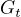
是从 t 阶段之后的总的discounted reward之和。 从强化学习的角度来说，奖励值是由环境动力学决定。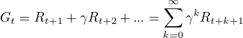
其中，G 来自一个随机样本，累计了从当前状态的奖励（immediate reward）一直到未来的奖励（delay reward）
2.2.2 Why discount
- 数学的可行性、容易性
- Markov Process 是无限的，不可能无限的考虑到之后所有的reward
- 未来的不确定性，无法完美的表征未来
2.2.3 Value Function
Value Function 会给出当前状态以及到未来所有状态下的期望 return（）
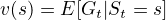
根据 value function 选择 最大的那个状态的方向。
2.2.4 Bellman 等式
上诉的value function可以拆分开（动态规划）：
- 立即反馈
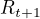
- discounted后续的
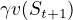
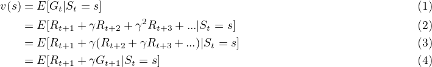
2.3 Markov Decision Process
Markove Decision Process 可以用元祖表示（S, A, P, R, ）
和上诉的MRP相比多了：
- A：action的集合
MRP到某个state是通过概率的方式计算，而MDP加入了action，是agent主动选择某个action进入一个state
2.3.1 Policies
Agent的行为完全取决于Policy。
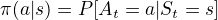
2.3.2 Value Function
 ：policy
：policy
- state-value function
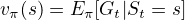
- actor-value function
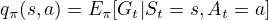
2.3.3 Bellman Expectation Equation
v ：当前 state 的 value q ：当前 action 的value
2.3.3.1 State 与 State ，Action 与 Action 之间的转换
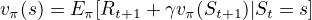
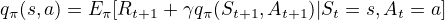
2.3.3.2 相互之间的转换
当前 State 的
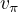
，等同于当前 State 选某个 Action 的 Reward（0）+ 后续 （Action 对应的 Value * 当前策略下在 State 选这个 Action 的概率） 之和
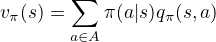
当前 Action 的 ，等同于 执行当前 Action 的 Reward（
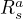
） + discounted（） 后续的（执行这个 Action 到达另一个 State 的概率（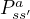
） * 这个 State 的 Value）之和
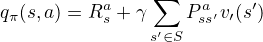
讲两个式子合起来：
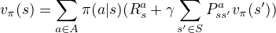
理解这些式子要抓住：当前状态的预测 reward value：当前的 reward value 和之后的 return value 之和
2.3.4 Optimal Policy
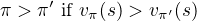
- 任意性 一个 policy 比另一个好，意味着它的所有 value function 的取值都比原来的 policy 要好，不存在差的情况
- 对于任意的 MDP 过程，一定存在一个 policy，比任何一个 policy 的表现要好
- 最优的 policy 可以不止一个
3 Lession 3
3.1 动态规划
- 可以被分解成子问题
- 子问题都是相同且重复的
3.2 为啥使用动态规划的方法解决RL？
- Bellman Equation给出了循环迭代的等式
- Value function可以被存储，之后使用到某个节点的value时可以重复使用，并且被不停更新
3.3 动态规划在求解 MDP 的应用
3.3.1 预测问题
策略已知，根据策略和当前环境求在此策略下每个状态的 value, 评估这个策略的好坏
3.3.2 控制问题
未知策略，一次次迭代求出最优策略下的 value 和最优策略
3.4 Policy Iteration
- Policy evaluation：评估当前策略 下计算出来每个状态的 value
- Policy improvement：利用贪心算法优化当前 Policy
- 迭代
3.4.1 Evaluation Example
注意：evaluation 步骤没有更新 policy


不要被右边的 Greedy Policy 迷惑，计算的时候 Policy 不是实时更新的：以 k=2 时 -1.7 的计算为例说明：
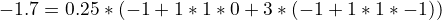
3.5 Policy improvement
实时更新 Policy，如果新的 policy 和之前的相同，那么表示当前 policy 已经收敛，为最佳 policy
3.6 Control 如何找到最优策略
- Bellman Equation + greedy policy improvement
- Value Iteration 将最大的 action value 作为当前 state 的 value function
4 Lession 4免模型预测 Model-Free prediction
4.1 Monte-Carlo RL
- 目标： 在随机策略 下，agent 和环境不停的交互，得到一系列 state、action、return 的值，用来计算
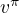
- Return：折扣 reward
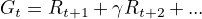
- 不知道环境的情况下，只能使用蒙特卡罗抽样的方法，一次次试验，从经验中求 Return 的均值
- 片段（episodes）：agent 在环境中执行某些动作得到一系列反馈。类似，一个机器人在地上，可以前进或者后退，执行一系列操作，得到
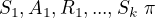
，被称作一个片段。每一次抽样，可以称为一个片段
4.1.1 两种 value function 的计算方式
- First-Visit：在同一个片段中，第一次访问到状态 s ，累加次数
- Every-Visit：在同一个片段中，每一次访问到状态 s ，累加次数
4.1.2 增量更新
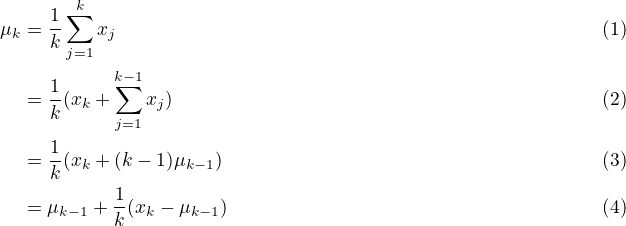
因此：
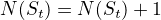
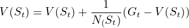
在非稳定环境下，不需要做到完全的平均，因为环境随时在改变。因此公式的改进如下：
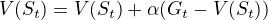
注意：蒙特卡罗方法，需要在某个片段完成之后才能进行计算。
4.2 Temporal-Difference RL
- 直接从样本经验中学习
- model-free，未知 MDP 转换和 reward
- 从 不完全 的片段中学习，bootstrapping
- bootstrapping：在状态 1 预测到结束状态的时间（例子），到了状态 2 之后，再进行预测，此时更新状态 1 的预测时间
- 目标：在随机策略 下，通过采样，不断更新
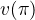
- TD(0)：
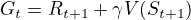
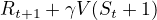
被称为 TD target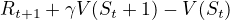
称为 TD error
4.3 MC vs. TD
- TD 可以通过每一步来学习；MC 只能等某个片段完全结束之后学习
- TD 可以通过无限的片段学习
- MC 适用的环境可以不是 Markov 的，因为是从样本中直接学习，不去预测，而 TD 只适用与 Markov
- MC 不 bootstrap，DP、TD bootstrap
- MC、TD sample，DP 不 sample
4.3.1 MC Backup
一个完整的片段之后，更新 value function
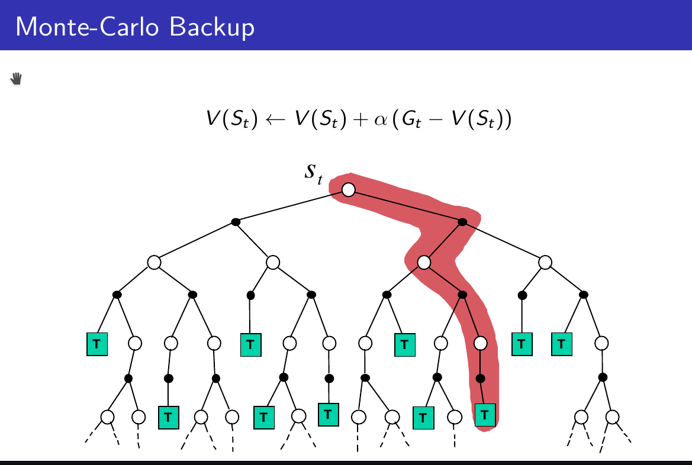
4.3.2 TD Backup
某个片段执行开始之后，就可以更新之前的 value function
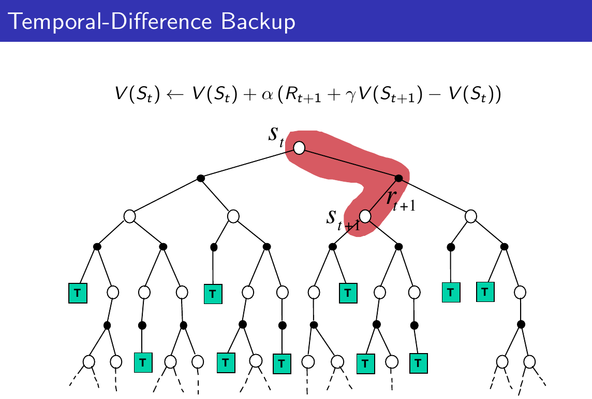
4.3.3 DP Backup
默认知道环境
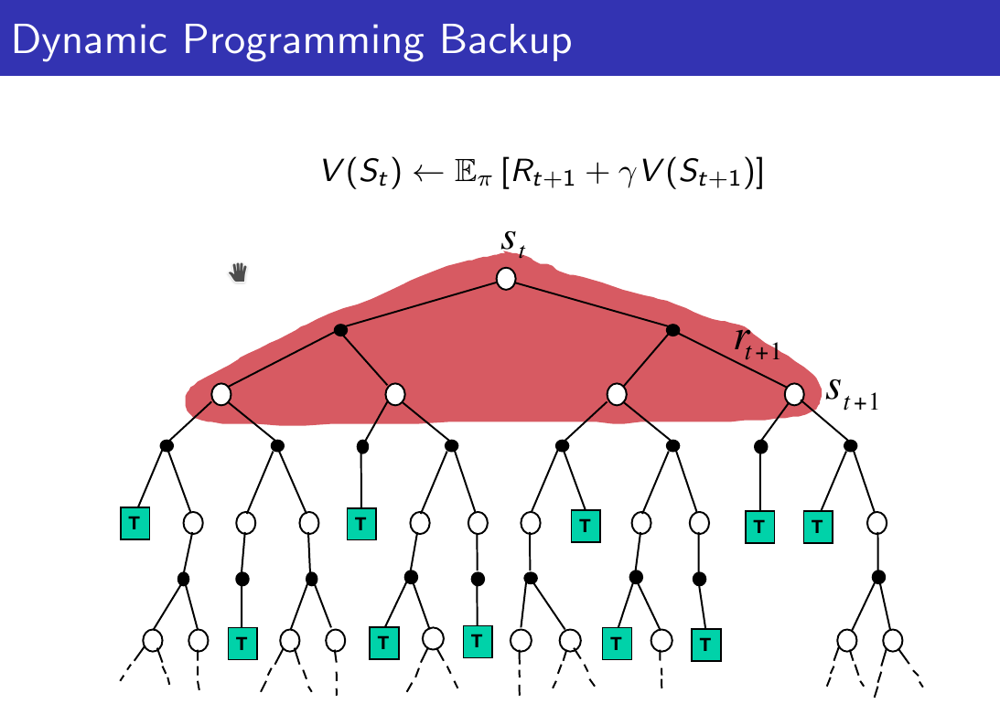
4.4 n-Step Return
TD(0) 指 ，TD() 就是，有 项参考实际的 return，之后的项使用预测值。
将 n-Step Return 计算其平均值，可以得到更好的
4.5 Backward-View TD()
4.5.1 资格迹 Eligibility Traces
- Frequency heuristic：这个片段中 某个状态出现的次数越频繁，对当前状态的reward 影响越大
- Recency heuristic：离当前状态越近的状态，对当前状态影响越大
每经过一个 Step，通过 减小 E(s)；如果再次遇到 s 这个状态，将 E(s) + 1
4.5.2 Backward-View
- 为每个 state 保留一个资格迹
- 每走一个 state，E(s)
- 更新 V(s)
，TD() 相当于 TD(0).
5 Lession 5 Model-Free Control
5.1 On and Off-Policy Learning
- On-Policy
- Learn on the job
- 根据 Policy 的执行，在这个过程中学习，sample 遵循 policy
- Off-Policy
- Look over someone's shoulder
- 未知 Policy，采样来学习他人的经验
5.2 Model-Free 使用 Action Value Function
Evaluation 的时候，使用 MC 的方法，跑几组 sample 计算出 Value Function，然后 greedy。
此方法的问题是：MC 是 model-free 的，没有全部的 state 信息，因此可能会漏掉很多概率小但是 return 非常大的状态。因此需要给当前 return 小的 state 一些机会。
5.2.1 -Greedy
每次 greedy，不直接选 Q 最大的，而是会给其他的 Action 留点机会（m：一共有 m 个 action）：
优化之后的 Iteration：
5.2.2 GLIE
Greedy in the Limit with Infinite Exploration.
- action-state 对 是无限的，一直会重新出现
5.3 Sarsa
由 TD(0) 延伸。
相比于 MC，Sarsa 不同的地方在于：原来每个 episode 更新一次策略，现在每个 timestep 更新一次；因此 Q 不能直接计算，而是需要预测。
5.4 n-Step Sarsa
由 TD() 延伸。
5.4.1 Forward view
这个方法将 TD(0) 到 TD(n) 的预计做了平均，唯一的缺点就是需要执行完整个 episode 才可以更新 value function。
5.4.2 Backward View
资格迹很好理解。参考上诉 4.5.1
Sarsa() 算法其实就是对 Sarsa(0) 算法的基础上增加了资格迹（Eligibility Trace）。算法中有两处更新 E(s)，第一次是访问到的状态的更新，直接加 1；第二次是将所有状态衰减。
5.4.3 Sarsa Compare
假设：只有到达终点时候才会得到 reward 1，情况都是 0
如果使用 Sarsa(0)，那么一次 sample 完成之后，只会更新离终点最近那个状态的 value，而不会更新其他状态；如果使用 Sarsa()，一次 sample 完成之后，会更新此次 sample 路径上所有的 value，因为在取样的时候已经更新过 E 了，而当获得一次 1 时，也会去更新其他状态的 value。
5.5 Q-Learning
Q-Learning 即 SarsaMax，在计算 TD-error 的时候使用最大的 Q 函数。
6 Lession 6
目前学到的计算 Value Function 的方法是通过一个 lookup table，
- 每个状态有一个 V(s)
- 每个 state-action 对有一个 Q(s,a)
上诉方法的缺点有：
- 维护一个太大的表，占用太多内存
- 就算可以维护，从大的表中计算 Value 比较困难
解决上诉问题的方法就是建立一个估计函数——估计某个状态的 value function
原来的 value function 是一系列的 value 保存在 Q-table 中；使用预测函数将会只保存这个预测函数，以及不停更新 w 值。w 是一个一维向量，可以看作当前状态的抽象表示（举个例子，小车爬山，当前的位置和速度都算是当前环境的因素，可以看作 w）。
6.1 Gradient Descent
- 是可微分的，w 是其变量向量组
- 描述预测函数与实际值的方差，可见 越小，w 越好，因此调整参数应该朝着使得 小的方向进行，即负梯度的方向
- 的梯度
- 通过梯度下降找极小值，确定最佳函数的 w (
 是步长参数 step-size)
是步长参数 step-size) - 目标：找到参数向量 w , 最小化近似函数 v(s, w) 与实际值 v(s) 的方差
6.2 Feature Vectors
用一个特征向量表示一个状态，每一个状态是由以 w 表示的不同强度的特征向量来线性组合得到的： 可以理解为影响 value function 的因素所占的比重。
6.3 线性函数近似
通过对特征的线性求和来近似价值函数：
6.4 预测 —— 递增算法
之前写出的公式都不能直接用于强化学习，因为公式里需要一个真实的 value function
对于不同的算法使用不同的值代替真实的 value function
6.4.1 MC Value Function Approximation
MC 的 是真实价值 的有噪声，无偏采样，可以看作是将监督学习的标签数据代入机器学习算法进行学习：
无偏是因为 MC 的 是准确的，是在整个 episode 结束之后才计算出。
MC 方法最终会收敛到局部最小值，即使使用线性函数近似时也会收敛。
6.4.2 TD Value Function Approximation
TD-Target 是真实价值的有噪声，有偏采样：
线性 TD 近似收敛至全局最优解
6.4.3 Value Function Approximation
是真实价值的有噪声，有偏采样：
6.5 Incremental Control Algorithm
从一系列参数开始，得到一个近似的状态行为对价值函数，在 的策略下产生一个行为，在相应算法下计算相应的 Target 值，然后对近似函数参数进行更新；如此反复进行策略的优化，同时逼近最优价值函数。
策略评估：近似的策略评估 策略改善：
6.6 Batch Methods
前面说的方法都是实时的，每经过一个 Step , 更新一次算法。批方法则是把一段时期内的数据集中起来，通过学习使得参数能更好的符合这段时期内的所有数据。
6.6.1 最小平方差预测
相当于是经历重现，找 最小的 w , 更新参数。只要重复下面步骤即可：
7 Lession 7
之前学过的方法都是 value based, 即通过值函数的更新，对值函数 greedy 选取相应策略的方法。而第七章讲的是 policy based 的方法，即直接对策略进行学习，最后得到是一些概率（选择某个 action 的概率）
例如，格子世界中逃跑者的训练，使用 value based 方法很难训练成功，因为对于逃跑者来说，其实只要不是朝着追逐者的方向走，那么其他三个方向都算是最优解，这会给求 Max Value 带来问题。因而只能使用策略梯度的方法。
7.1 目标函数
7.1.1 片段式环境（episodic）
使用开始状态的值
7.1.2 持续环境（continuing）
使用 state value 的期望
使用 action value 的期望
其中，d 指：在以 为参数确定的策略 下，稳态马尔科夫链中状态 s 出现的概率
有了目标函数，我们需要做的就是寻找一组参数 使得目标函数最大。最常用的方法是梯度上升，使用梯度法就需要用到
7.2 分值函数Score Function
策略梯度可以等价的表示为策略乘以一个似然函数的导数，这个与极大似然操作形式一致的式子叫做分值函数
7.3 softmax policy 的分值函数
7.3.1 softmax function
对网络的输出 进行线性组合当作 softmax 的输入：
7.3.2 化简 score function
表示在策略 下，输出的加权平均。所以分值函数就表示：采取的某个动作获得的“分数”比“平均分”要多多少。
7.4 Gaussian Policy 的分值函数
7.4.1 Gaussian Policy
- 使用 state 的线性组合表示
7.4.2 化简分值函数
同样，这个分值函数也表示：采取某个动作获得的“分数”比“平均分”要多多少。
7.5 Policy Gradient策略梯度
奖励函数的导数等于分值函数乘以 long-term Reward Q 在策略下的期望。
它表示：如果某个动作获得的“分数”比平均分多，而且其带来的 Reward 也大，那么参数就朝着这个动作的方向移动。
7.5.1 Monte-Carlo 策略梯度
将上诉策略梯度的方法结合 Monte-Carlo 方法，得到 Monte-Carlo 策略梯度
- 使用策略上升（为了提高 J）
- 使用 return 作为 的无偏采样
- 波动很大，很难收敛（每次采样的变化都会很大）
7.5.1.1 注意
如果一个训练集只有正值，那么所有的Reward永远都不可能会有负值，也就是说每个动作无论好坏都是正的反馈，那么如果某个动作一开始正的反馈变多，那么它的概率也会变大，相对应的其他动作的概率就会变小。时间一长很容易导致探索单一的情况。这个时候可以让return用来代替。
7.6 Actor-Critic 策略梯度
直接使用采样的方法进行策略梯度分析会有很大波动，因此使用近似的 来代替 , 会有很小的波动；这就引出了 Actor-Critic 算法。
其中：
- Actor: 使用梯度上升更新策略函数中的参数 ,会用到 Critic 的结果 Q
- Critic: 使用梯度下降更新 Q 值中的参数 w
Actor 在更新策略函数的参数时，需要 Critic 告知哪个好（利用 Q 值更新）；Critic 计算 Q 值的时候需要用到 Actor 的策略函数。
7.6.1 Action-Value Actor-Critic
- 使用线性函数对 Q value 逼近
- 使用 作为 Critic 的 Q value 计算方法，参数为 w
- Actor 使用策略梯度，参数为
7.6.2 Compatible Function Approximation
如果使用上诉方法进行对 Q value 的估计，是带 bias 的有偏估计，因此不一定准确。
如果 满足：
- action value function 的徧导等于策略梯度
- 调整 w 的值，使得真实值与估计值之间的均方误差最小
则：
7.6.2.1 Proof
7.6.3 方差依然存在
尽管使用预计的 Q value 估计 Q value 的真实值可以减小方差，但策略梯度本身还有个问题：
策略梯度更新是按 Reward 增大的方向进行的，如果 reward 都是正数，那么 只会增加不会减小，随着时间的推移，方差会越来越大（？？不是很理解）
所以我们希望引入一个函数，使得期望不变，但方差可以减小，这个函数称为 Advantage Function，记作
7.6.3.1 Baseline 函数
引入 Baseline 函数是为了：
- 方差变小
一个与动作 action 无关，只与状态 state 有关的基准函数 B(s) ，乘以分值函数之后，计算其期望为 0。也就是说，我们可以在奖励函数的梯度的基础熵任意增减一个式子，而保持梯度不变。一个不错的基准函数可以是
上式中， ，对常数求导为 0
因此可以将优势函数写成：
其奖励函数的梯度为：
优势函数的意义是，在动作值函数的基础上减去了对应状态拥有的基准值，使之变为动作带来的增益，因而降低了方差。
7.6.4 具体实现
从上面的分析可以知道，使用优势函数的Loss函数最能符合我们的预期。但优势函数中有网络、网络和策略网络，这样只会增加代码的复杂性。因此我们使用表示，将优势函数化简为。现在只需要有策略网络和状态值网络。这两个网络的输入相同，在实现的时候也可以直接在最后一层网络的实现上将网络分成两个输出。
8 Lession 8
前七讲涉及到的知识有：1. 从经验中直接学习Value（State Value or Action Value）；2. 从经验中直接学习策略。没有讲解个体构建模拟环境对解决问题可以带来什么帮助。这讲将会学习三个方面的内容：1. 从经验中直接学习模型；2. 使用模型构建新的Value Function 或者策略；3. 整合 Model-Based 和 Model-Free 的方法一起训练网络。
8.1 Model Based RL

我们不再是直接通过经验进行学习，而是通过经验先构建环境的模型，然后使用构建的模型进行模拟训练，来更新相关的 Value 或者 Policy。这里的 Planning 特指在构建的模型中进行训练，而非在真实情况下的训练。
之前我们知道，如果完全的了解环境之后，就可以使用 DP 的方法推出解决问题的路径。所以，这就提供了一种不同于 Model Free 的模型更新方法，不再一味的追求 Max Value 或者 Optimal Policy，而是执着于构建模型。有了模型之后，就可以在模型中模拟训练判断出哪个行为是好的，哪个是不好的。这种方法让个体变得更像人，它会对不同行为之后的动作进行模拟推理，类似于“奇异博士”的推演能力。
但这种方法会有更大的误差：1. 构建模型的误差；2. 从模型中推理 Value Function 或 Policy 的误差。
8.1.1 模型的数学描述
- 模型是一段的参数化表示
- 假设状态空间和行为空间已知